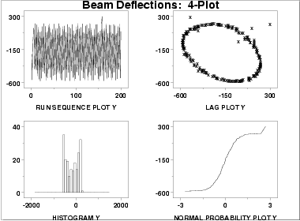

1.
Exploratory Data Analysis
1.2.
EDA Assumptions
1.2.3.
|
Techniques for Testing Assumptions
|
|
|
Testing Underlying Assumptions Helps Assure
the Validity of Scientific and Engineering Conclusions
|
Because the validity of the final scientific/engineering conclusions
is inextricably linked to the validity of the underlying univariate
assumptions, it naturally follows that there is a real necessity that
each and every one of the above four assumptions be routinely tested.
|
|
Four Techniques to Test Underlying Assumptions
|
The following EDA techniques are simple, efficient, and powerful
for the routine testing of underlying assumptions:
- run sequence plot
(Yi versus i)
- lag plot
(Yi versus Yi-1)
- histogram
(counts versus subgroups of Y)
- normal probability plot
(ordered Y versus theoretical ordered Y)
|
|
Plot on a Single Page for a Quick Characterization of the Data
|
The four EDA plots can be juxtaposed for a quick look at the
characteristics of the data. The plots below are ordered
as follows:
- Run sequence plot - upper left
- Lag plot - upper right
- Histogram - lower left
- Normal probability plot - lower right
|
|
Sample Plot: Assumptions Hold
|

This 4-plot reveals a process
that has fixed location, fixed variation, is random, apparently
has a fixed approximately normal distribution, and has no outliers.
|
|
Sample Plot: Assumptions Do Not Hold
|
If one or more of the four underlying assumptions do not hold,
then it will show up in the various plots as demonstrated in the
following example.

This 4-plot reveals a process
that has fixed location, fixed variation, is non-random
(oscillatory), has a non-normal, U-shaped distribution, and has
several outliers.
|